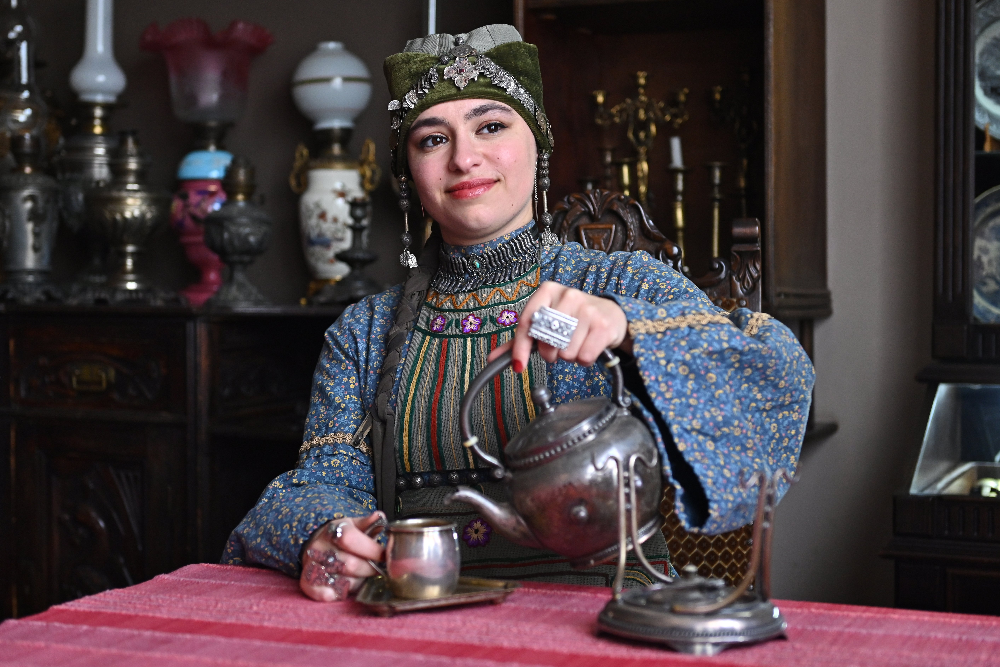

Hello, and welcome to my corner of the internet. I'd normally ask if you'd like tea or coffee, but for now let me introduce myself.
My name is Araxie, after the Arax river that runs through Armenia, Turkey, and Iran. I am inspired by my Armenian and Jewish heritage, and I hope to build a future that my ancestors could only dream of. My creativity also grows from my home city of Chicago and the wonders of nature wherever I am.
I am a writer and editor. My published work is mostly nonfiction, but I have recently been delving into the realms of science fiction and poetry, and I hope to share more of that soon. I'm also an editor and organizer of Azad Archives, where I love to create inclusive spaces for Armenian creatives around the world.
When I'm not writing, I love learning new things. Currently I'm learning rock climbing, Western Armenian, and coding (like this website!).

Araxie Cass
